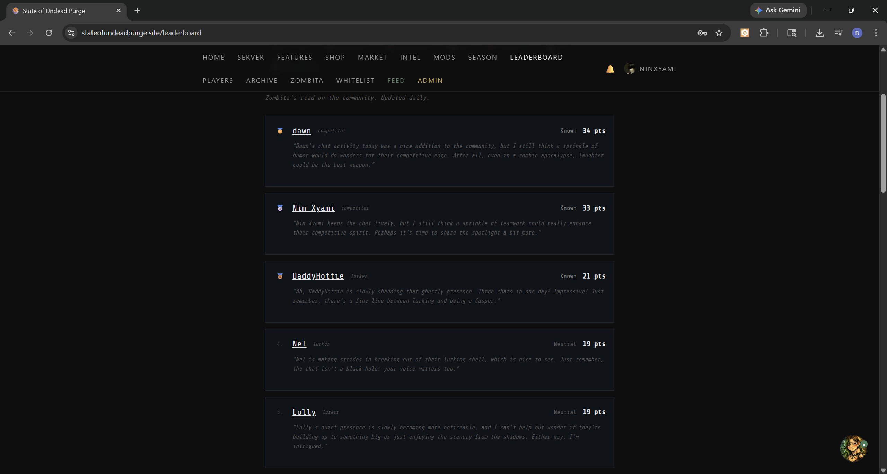
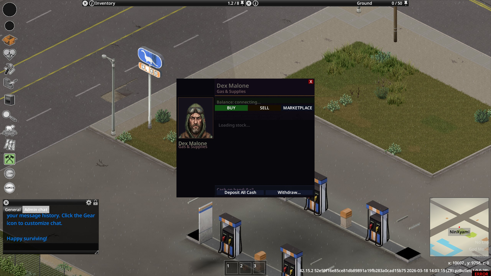
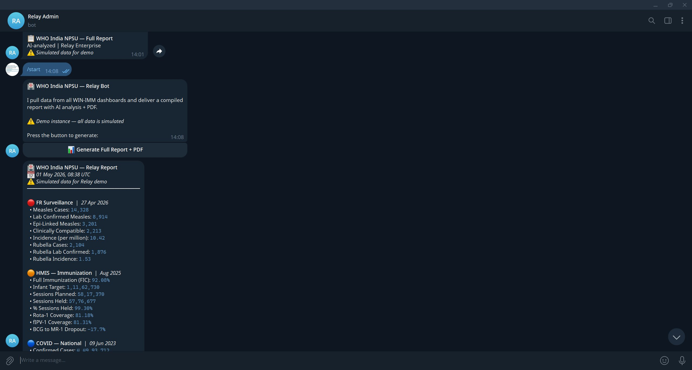
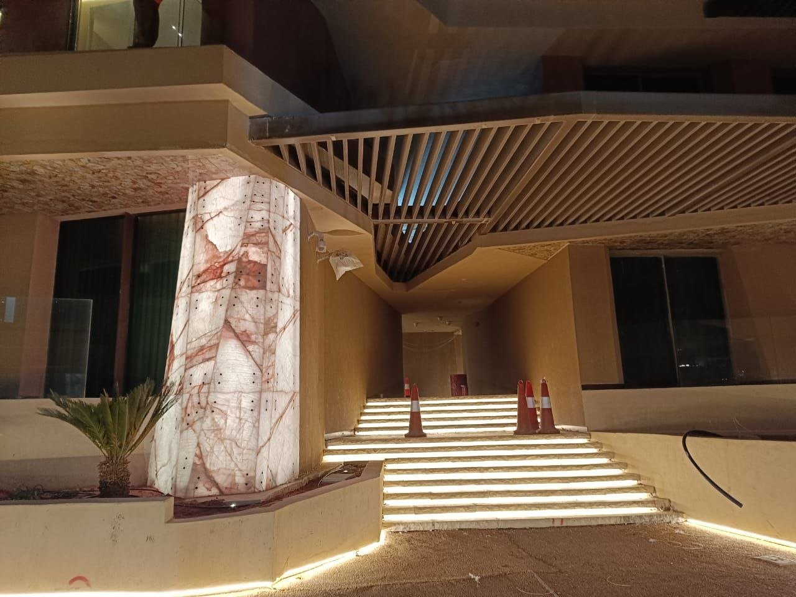
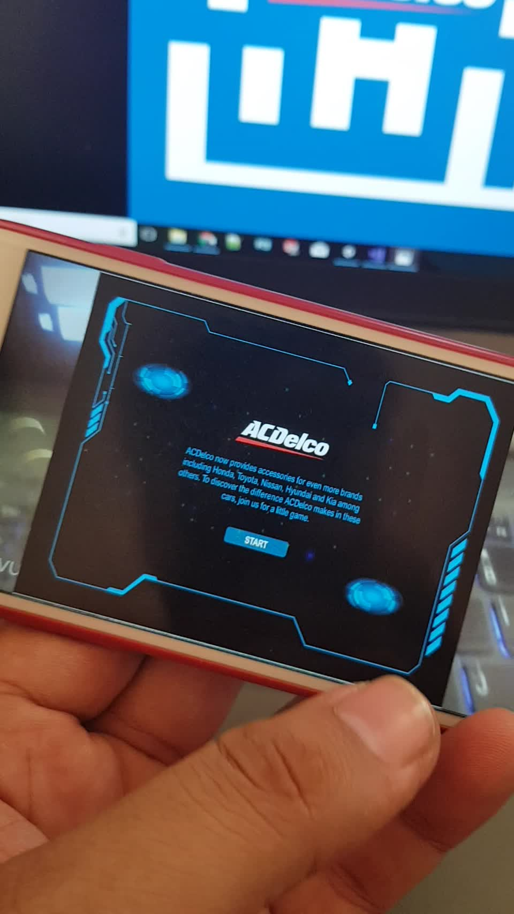

Soup: Multi-runtime Community Platform
A persistent gaming ecosystem spanning a Project Zomboid game server, a Discord community of several thousand active members, and a custom Next.js web platform. Same state, three runtimes. Live admin tooling, dynamic economy, real-time cross-surface sync.

Zombita: Persistent LLM-driven NPC
A working LLM-driven persistent NPC on a multiplayer Project Zomboid server. Four-layer memory, affective state modelling, trust-based reputation, mood-gated information intake. The Zomboid community has been trying to solve NPCs for years; this is mine, running live.

Relay: Multi-channel Report Compiler
A channel-agnostic system that aggregates data from multiple dashboards, runs LLM analysis on the compiled data, and delivers a formatted PDF report inline in Telegram, Discord, or Teams. Demoed as a public-health surveillance tool.

NEOM Sindalah Tower Lighting
A distributed real-time lighting system controlling 42 LED towers across the Sindalah Island development. One Surface Pro tablet, a Unity operator interface, 13 networked TouchDesigner backends, and an MQTT bus. Designed, built, and deployed on-site as solo software engineer in three weeks.
Open-Water Boat Racing
A boat racing system originally built as a VR experience, later deployed as a dual-screen physical installation with custom ship's-wheel controllers in a luxury retail venue. Checkpoint racing, buoyancy physics, AI-navigated obstacles.
Batak Reaction Wall
Wall-mounted reaction game deployed at public venues. Software, integration, and installation design by me; physical button hardware co-developed with an embedded engineer. Multiple deployments across events.
Jeep VR
First-person VR driving experience built for a military-themed mall event. Vintage jeep cockpit, island environment with airbase and beach terrain. Custom vehicle controller, VR cockpit ergonomics, level design by me.
AI Photobooths
AI-driven photobooth kiosks deployed at major Indian airport hubs and brand venues. Live capture, themed AI portrait generation, QR-based delivery. Built for unattended high-traffic public spaces.

Selected commercial work
Additional branded interactive work delivered through agency engagements. Client names omitted; happy to discuss in conversation.
Three-player simultaneous activation with custom controllers and on-screen scoring, built for an IPL franchise sponsor's brand event.
Marker-based AR experience with persistent leaderboard. Vuforia for tracking, custom hand-illustrated map UI, scoring synced to a backend.

Phone-based branded experience for a global automotive components company. Touch-driven parts identification with timed rounds. Deployed at brand events.

SideScroller: Narrative Platformer
A solo-authored narrative platformer built in Unity. Three visual moods (golden dawn, twilight, night) trace the redemption arc. Built during MA using 2D Game Kit; today the underlying systems are work I'd write myself.

Final Project: Point-and-Click Adventure
A hand-illustrated point-and-click adventure built in Unity using Adventure Creator. Puzzle design, dialogue, multiple scenes, save/load. Shares character continuity with SideScroller: same protagonist, different game, same universe.
I build production systems and ship things people actually use. Game engines, agent architectures, real-time multiplayer infrastructure, and the kind of physical interactive installations where the software has to keep working when a stranger pushes a button at a mall.
Director and Lead Developer at InteractXP. Solo author of Zombita, Soup, and Relay. Currently in the Canadian Express Entry pool. Open to remote work and physical relocation.
Also pursuing PhD research in multi-agent narrative systems and information reliability. Research portfolio →